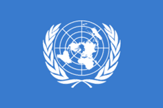

Republic of Cyprus Flag and other Flags in Cyprus
UNFICYP Flags

UN Flag The United Nations Peacekeeping Force in Cyprus (UNFICYP) was established in March 1964. Its mission was specified in resolution 186 (1964). The task of the force is to prevent a repetition of violence between the Greek Cypriots and Turkish Cypriots and to help maintain and restore the law and order and a return to normal conditions. The UNFICYP mission was extended and expanded after the 1974 Turkish invasion of Cyprus to maintain the cease fire between the two sides. The main task of UNFICYP now is to maintain the stability in the 180-km buffer zone, and to guarantee that there is no change of the status quo along the two ceasefire lines drawn on 16 August 1974 given that more than 40.000 troops from Turkey are still illegally occupying the northern part of the island. The peacekeeping force headquarters is located within the United Nations Protected Area, near the Nicosia International Airport that is not being in use. UNFICYP force consists of 919-strong personnel from 13 different countries � Argentina, Australia, Austria, Canada, Croatia, El Salvador, Hungary, India, Ireland, Italy, the Netherlands, Slovakia and United Kingdom. The national flags of these countries can be found in the buffer zone of Cyprus along with the UN flag. UNFICYP in the news
|